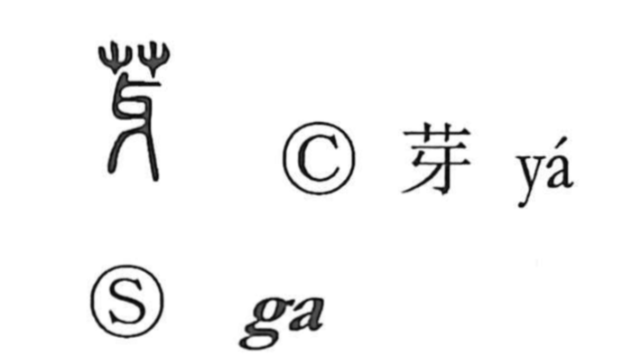

芽

Uncategorized
Kun: me, megumu | On: ga
bud ・ sprout
Explanation
芽 is a phono-semantic character built on 牙, the tusk of an animal. 牙 contributes the on reading ga and suggests a form that is strong, sharp, and slightly curved. With the grass radical added above, that forceful image turns into the lively thrust of a shoot breaking through the soil, so the character comes to mean a bud or sprout. From this core sense arise uses such as megumu, “to put forth buds,” and, by extension, the notion of the first signs of something beginning to emerge.